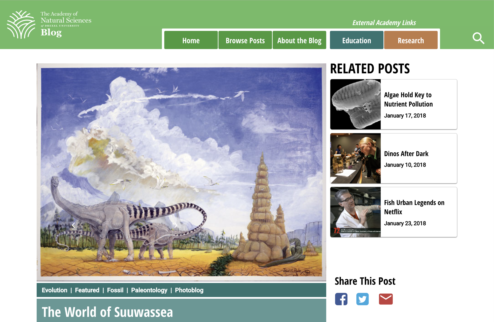

This was part of a project for User Interface Design II in Winter 2018.
We were tasked with redesigning the user interface of a news website's home and article page so that they
would be responsive and look good on mobile, tablet, and desktop screens.
You can view an interactive prototype on UXPin by
clicking here. Be aware that the UXPin interface works a lot better on a desktop computer than
on mobile, so your experience may vary.
Here are a few pictures of the old Academy blog versus my redesigns:


